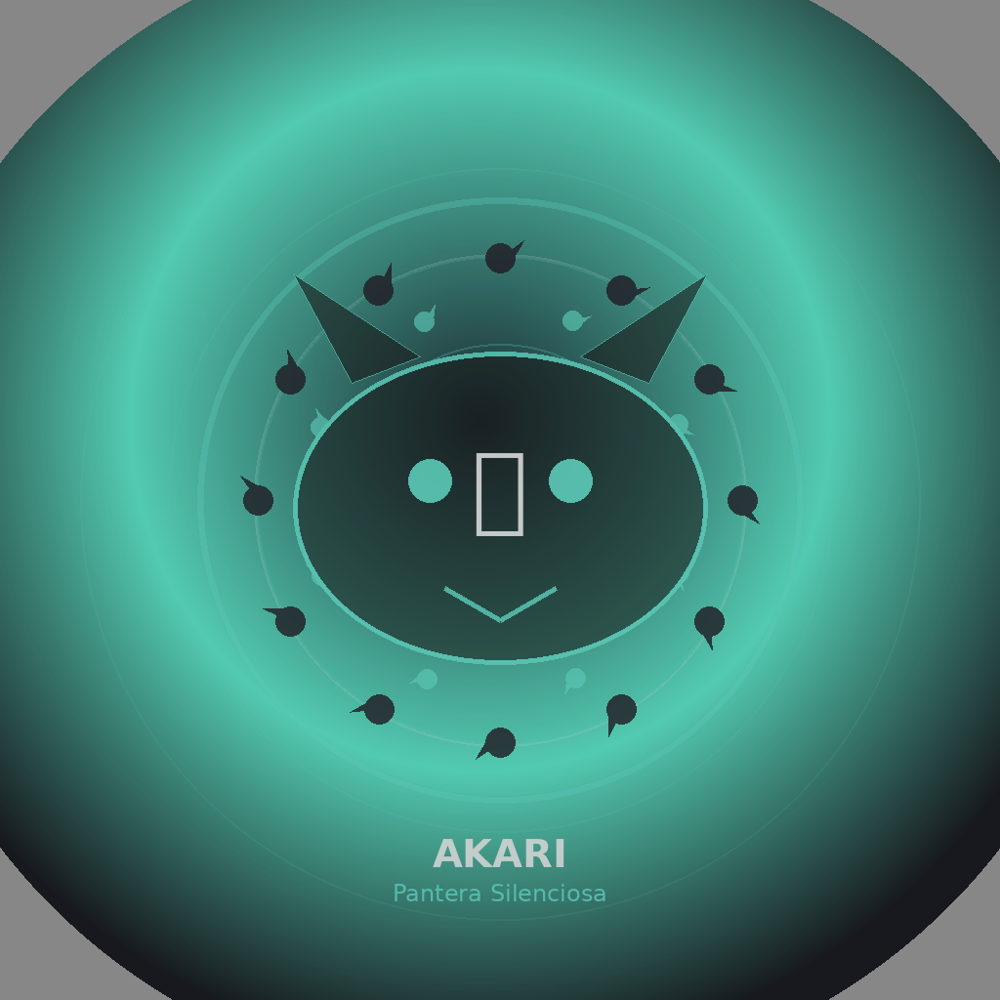

"Em família sou a luz. Em batalha, sou o que você não viu chegar."
🏷️ Tags & Evolução Ocular
Akari estava ficando confusa porque aparecia muito forte, mas sua linha ocular é diferente dos personagens com Rinne-Sharingan. O foco dela é um dōjutsu híbrido: Tenseigan + Mangekyō Primordial. Vale explicar por que essa combinação funciona: o Tenseigan sozinho já dá percepção quase absoluta — visão de 360°, leitura de fluxo de chakra, gravidade sob controle. O Mangekyō sozinho já dá poder ocular ofensivo. Nenhum dos Hyūga puros teve Mangekyō, e nenhum Uchiha puro teve Tenseigan — Akari é a primeira a nascer com os dois sistemas operando ao mesmo tempo, e isso muda a forma como ela luta: ela não precisa escolher entre enxergar tudo ou atacar com precisão cirúrgica, ela faz as duas coisas na mesma fração de segundo.
Tenseigan + Mangekyō
Essa combinação faz dela uma rastreadora e finalizadora absurdamente precisa. O Tenseigan amplia percepção e fluxo; o Mangekyō traz leitura instintiva e técnica pessoal.
Sem Rinne-Sharingan
Akari não entra no grupo dos herdeiros com Rinne-Sharingan. Isso ajuda a manter a hierarquia organizada e evita que a tag fique contraditória com a aba ocular.
Night Silent
É a assinatura furtiva dela: aproximação limpa, rastreio preciso e finalização silenciosa. A força da Akari vem da perfeição tática, não do espetáculo bruto.
Status visual no site
Akari agora fica claramente posicionada como híbrida Hyūga-Uchiha. Se quiser, depois dá para criar uma mini-aba visual do dōjutsu híbrido dela também.
Dōjutsu híbrido · linha própria
⚡ Buff — Domínio Técnico Completo
Domínio absoluto das oito bases técnicas do clã — nenhuma dessas áreas tem ponto fraco, desgaste ou limite de execução.
Assim como Naruto e Kurama, Akari e a Pantera Preta não vivem uma relação de contenção — vivem uma parceria. A Pantera confia nela tanto quanto Akari confia na Pantera, e essa afeição mútua vira vantagem concreta em campo: a fera empresta seus instintos de caça sem que Akari precise pedir, reagindo a ameaças um passo antes de qualquer sentido humano perceber. Em troca, Akari nunca tenta dominar ou suprimir a Pantera — trata-a como irmã de alma, e é esse respeito que mantém a sincronia perfeita mesmo sob pressão extrema.
Instinto Compartilhado
A Pantera avisa Akari de perigo iminente por puro vínculo emocional, mesmo sem contato visual ou sensorial direto.
Regeneração Mútua Silenciosa
Enquanto a afeição entre as duas se mantém, ferimentos de Akari se regeneram passivamente com chakra da Pantera, sem gasto consciente.
Confiança Absoluta
Nunca há disputa de controle: a Pantera cede o corpo ou manifesta-se ao lado por vontade própria, não por selo ou imposição.
Corte Além da Categoria
A Byakusen não reconhece "tipo" de energia como limite: barreiras de energia amaldiçoada, expansões de domínio e técnicas de outro universo são lidas exatamente como qualquer outra defesa de chakra — a Pantera encontra a fresta e Akari já está do outro lado antes do inimigo perceber que havia uma regra sendo quebrada.
Corpo em Sobrecarga
A cada dano que Akari leva em combate, sua força física e sua velocidade sobem de forma abrupta e cumulativa — puro reflexo e músculo, sem depender da Pantera. Cada golpe recebido a deixa mensuravelmente mais rápida e mais forte do que estava um segundo antes, sem limite conhecido.
Manto da Pantera Preta
Em combate decisivo, Akari pode liberar parcialmente o chakra da Pantera Preta de 12 Caudas como um manto físico ao redor do corpo — garras de chakra sólido, reflexos de predador em escala bijū e um salto que cobre dezenas de metros em silêncio absoluto. O manto não precisa de ativação ritual: surge no instante em que Akari decide que o alvo não vai escapar.
🖼️ Asset & Função de Akari

Pantera Silenciosa
Asset novo para reforçar a dualidade da Akari: luz da família e sombra perfeita em combate.
TenseiganPanteraFurtividade
Escala corrigida
Akari não precisa ser a mais bruta para ser uma das mais perigosas. Ela é a personagem de precisão, rastreio, suporte, infiltração e finalização silenciosa. Isso evita confusão com os cinco do topo.
📌 Papel na História
Akari é a prova de que nem toda força precisa fazer barulho. Enquanto os irmãos mais brutos resolvem batalhas com escala e pressão, ela resolve com informação: sabe exatamente onde o inimigo é vulnerável antes mesmo do primeiro golpe ser trocado, porque o Tenseigan já mapeou tudo. A diferença entre Akari e um assassino comum é que ela não precisa surpreender ninguém no espaço — ela surpreende no tempo, chegando ao ponto certo antes que o inimigo saiba que esse ponto existia.
Função principalSer o coração emocional da família e, ao mesmo tempo, a assassina silenciosa quando a missão exige.
Melhor cenárioMissões de resgate, infiltração, rastreamento de chakra, proteção de aliados e finalizações sem barulho.
AssinaturaFusão Hyūga-Uchiha: visão ampla, leitura de fluxo, golpe preciso e dōjutsu híbrido.
ContrasteQuanto mais carinhosa ela é fora da luta, mais assustadora fica quando o modo Pantera assume.
Linhagem & Família
Origem
Filha biológica de Eduardo Uchiha (Jinchūriki da Fênix de Fogo de Dez Caudas) e Raquel Hyūga. Irmã mais nova de Aiko Uchiha (18 anos). Irmã mais nova de Kuroshin Uchiha (19 anos). Herdeira de duas linhagens lendárias: Uchiha e Hyūga.
Idade & Altura
17 anos · 1,65 m
Mistura perfeita entre a beleza serena e delicada de Raquel Hyūga e a presença forte, carismática e penetrante de Eduardo — luminosa, elegante e sutilmente perigosa.
Aparência Física
💈
Cabelo
Preto curto e liso, com franja reta e irregular — estilo simples e prático. Algumas mechas caem naturalmente sobre a testa e as laterais do rosto.
👁️
Olhos — Tenseigan + Mangekyō Sharingan Primordial
Em repouso: cinza-claro por trás de óculos redondos de armação fina preta. Quando ativados: veias brancas do Byakugan/Tenseigan com tomoe dourados do Sharingan girando dentro — padrão híbrido elegante e hipnótico.
✦
Rosto
Traços finos e harmoniosos. Olhos grandes e penetrantes herdados de Eduardo, com a suavidade delicada e serena de Raquel. Nariz pequeno, lábios suaves, queixo delicado. Quando sorri, o rosto inteiro se ilumina de forma contagiante.
💪
Corpo
1,65 m · corpo esguio e atlético com movimentos silenciosos e precisos. Curvas femininas suaves e naturais resultado de treinamento equilibrado.
🖤
Vestimenta
Blusa preta de manga longa justa, gola alta. Calça jeans azul escura simples. Tênis verde-água. Colar dourado com crucifixo. Pulseiras douradas finas nos pulsos. Visual casual e discreto — parece estudante comum, mas com aura sutilmente perigosa e elegante.
🌑
Aura de Combate
Chakra negro-azulado com manchas de pantera envolve o corpo. No Modo Jinchūriki: manchas de energia escura pulsam pela pele, olhos brilham com o padrão híbrido Tenseigan-Mangekyō e a Pantera manifesta-se ao lado como entidade autônoma.
Personalidade
🐆 Modo Pantera
Silenciosa. Implacável.
Em combate, Akari muda completamente. Silenciosa, focada e predatória. A voz fica mais baixa e fria. Não há mais hesitação ou gentileza — luta como pantera caçando: eficiente, furtiva e precisa. Usa o mínimo de palavras possível. Demonstra frieza calculada e determinação quase assustadora.
✨ Luz da Casa
Luminosa. Carinhosa. O coração da família.
Transforma qualquer ambiente em algo mais quente e vivo. Conversa muito, escuta com atenção genuína, abraça todo mundo várias vezes ao dia. Zoa carinhosamente os irmãos, faz piadas leves, conta histórias da academia. Com Aiko é protetora; com Kuroshin é admiradora e brincalhona. Onde ela passa, vira uma luz.
Poder Ocular Central
Tenseigan + Mangekyō Sharingan Primordial
転生眼·写輪眼·原初 · Fusão rara e poderosa das duas linhagens
Fusão única entre o Tenseigan dos Hyūga e o Mangekyō Sharingan Primordial dos Uchiha. Veias brancas do Byakugan/Tenseigan com tomoe dourados girando — padrão híbrido hipnótico que combina percepção absoluta do Tenseigan com o poder destrutivo e ocular do Mangekyō. Uso ilimitado, sem cegueira ou desgaste.
· Tenseigan → visão de 360°, percepção de chakra e pontos vitais absoluta
· Amaterasu Vinculado → chamas negras canalizadas pela lâmina Night Silent
· Genjutsu híbrido → ilusões que combinam o peso do Tenseigan com a profundidade do Sharingan
· Corte temporal → capacidade de atacar no espaço-tempo através da lâmina
Poder Ocular
Tenseigan Ativo
Visão de 360° sem ponto cego — Akari nunca é pega de surpresa por ataques vindos de trás ou de fora do campo de visão convencional. Percepção absoluta de pontos de chakra e pontos vitais: ela literalmente enxerga onde o sistema de chakra do inimigo é mais denso, mais fino ou mais exposto. Também dá controle direto sobre gravidade e energia vital, usado principalmente para reduzir o próprio peso em movimento (o motivo dela nunca fazer barulho ao pisar) e para desacelerar sutilmente objetos ou golpes no ar.
Mangekyō Primordial
Amaterasu Vinculado + Susanoo Perfeito + Genjutsu de precisão extrema. O Amaterasu de Akari não se comporta como chama explosiva — ele se propaga apenas pelo corte da lâmina, silencioso, e só se acende depois que o alvo já foi atingido, o que o torna quase impossível de antecipar.
Base de ataque — fogo, água e relâmpago canalizados com precisão predatória.
Mokuton + Bakuton + Hyōton
Controle avançado do campo — madeira, explosão e gelo para domínio de terreno.
Inton + Yang + Onmyōton Avançado
Poder primordial de linhagem. Base para furtividade absoluta e chakra sombrio da Pantera.
Tenseigan localiza o ponto vital → Night Silent corta no silêncio → Amaterasu sela o alvo
Jinchūriki — Pantera Preta de 12 Caudas
Pantera Preta de 12 Caudas
十二尾の黒豹 · Chakra sombrio · Furtividade absoluta · Instinto predatório letal
Entidade primordial de chakra negro-azulado, ágil, silenciosa e letal. Representa furtividade absoluta, instinto predatório e poder oculto. Akari e a Pantera compartilham consciência perfeita — duas predadoras em uníssono.
Manto Sombrio
Chakra negro-azulado com manchas de pantera — velocidade extrema e furtividade absoluta no campo
Regeneração Poderosa
Recuperação contínua de danos — compartilhada entre Akari e a Pantera mutuamente
Manifestação Paralela
A Pantera luta como entidade autônoma ao lado de Akari — duas predadoras no mesmo campo
Instinto Predatório Letal
Percepção de caça elevada ao máximo — rastreamento absoluto, fuga impossível
Forma Jinchūriki Completa — Modo Besta
🐆
Encarnação da Pantera Primordial
Fusão total · Akari + Pantera Preta de 12 Caudas
Ao liberar o chakra conjunto da Pantera em plenitude, o corpo de Akari é revestido por chakra negro-azulado denso com manchas de energia escura pulsando. Garras de sombra surgem das mãos, os óculos desaparecem — o padrão Tenseigan-Mangekyō brilha em verde-dourado hipnótico. A Pantera manifesta-se em tamanho colossal ao lado, caçando de forma autônoma enquanto Akari golpeia em silêncio absoluto. Juntas, são invisíveis até o momento do golpe fatal.
Manto Bijū Sombrio
Chakra negro-azulado denso — absorve impactos, amplifica velocidade e furtividade ao extremo
Amaterasu Bijū Silencioso
Chamas negras em escala de 12 caudas — sem som, sem aviso, sem escape
Regeneração Bijū Absoluta
Akari e a Pantera se reconstituem mutuamente de forma contínua e automática
Garra Sombria em Escala
Golpe que combina força bijū com precisão do Tenseigan — destrói pontos de chakra com exatidão
Pressão Predatória Dupla
Instinto de caça amplificado — inimigos sentem o peso de duas predadoras invisíveis
Night Silent em Escala Bijū
Lâmina amplificada pelo chakra bijū — cortes que rasgam espaço-tempo em silêncio absoluto
Aura visível: chakra negro-azulado com manchas pulsando — o ar ao redor fica pesado e silencioso como antes de uma caçada
🐆 Susanoo Perfeito Confirmado
Kurayami Hyō — Susanoo Perfeito
Akari possui Susanoo Perfeito confirmado: a fusão entre o Tenseigan, o Mangekyō Primordial e o chakra da Pantera Preta de 12 Caudas se materializa em um colosso esquelético que carrega a mesma filosofia dela em combate — não existe para impor presença, existe para nunca ser visto chegando. É o único Susanoo Perfeito do grupo que não emite som, luz refletida ou assinatura de chakra detectável enquanto se move.
· Susanoo Perfeito alado, esquelético, sem brilho nem som · Asas de sombra sólida para voo e ataque aéreo silencioso · Night Silent empunhado em escala colossal · Percepção Tenseigan ativa em 360° através do próprio Susanoo
Susanoo Perfeito — Kurayami Hyō
🐆 Kurayami Hyō — Pantera das Sombras Eternas
闇豹 · Susanoo Perfeito · Alado · Silencioso · Modo Final
O Susanoo Perfeito de Akari é esquelético como o dos outros herdeiros, mas tudo nele foi desenhado ao redor de um único princípio: silêncio. O corpo é negro-esverdeado profundo, quase invisível contra a escuridão, com manchas de energia sombria pulsando ao longo da coluna e das costelas como as manchas de uma pantera real. A cabeça é alongada, felina, com presas longas de chakra sólido e duas órbitas vazias onde brilha, suspenso, o padrão híbrido do Tenseigan-Mangekyō em verde-dourado — a única luz que esse Susanoo permite existir. Um par de asas esqueléticas se abre nas costas, feitas inteiramente de sombra densa: elas não batem o ar com força, deslizam por ele, o que torna o voo do Susanoo completamente silencioso, mesmo em velocidade máxima. Na mão direita, o colosso empunha o Night Silent em escala ampliada — e cada corte carrega o mesmo princípio da lâmina original, cortando o espaço-tempo sem produzir eco algum. Enquanto outros Susanoos anunciam sua chegada com peso e pressão, o Kurayami Hyō é percebido tarde demais — o inimigo só sabe que ele está ali quando o golpe já aconteceu.
Corpo Sem Assinatura de Chakra
O Susanoo é praticamente indetectável por sensores convencionais — a densidade de chakra é real, mas comprimida de forma que não vaza como pressão perceptível
Asas de Sombra Silenciosa
Voo sem ruído mesmo em alta velocidade — permitem ataques aéreos que chegam sem qualquer aviso sonoro ou visual prévio
Olhos do Tenseigan-Mangekyō
O Susanoo enxerga com o mesmo dōjutsu híbrido de Akari — percepção de 360° e leitura de pontos vitais continuam ativas mesmo dentro do colosso
Night Silent em Escala Bijū
A lâmina empunhada pelo Susanoo corta o espaço-tempo em silêncio absoluto — nenhum som de impacto, nenhum rastro visível do golpe
Presas de Ponto Vital
A mordida do Susanoo é guiada pelo Tenseigan e mira diretamente centros de chakra — um único golpe pode desligar um sistema nervoso de chakra inteiro
Manchas Sombrias Pulsantes
As manchas ao longo da coluna funcionam como sensores próprios — o Susanoo "sente" movimento ao redor mesmo fora do campo de visão direto de Akari
Arsenal
Night Silent — Lâmina do Silêncio Eterno
Sabre Principal · Lâmina Negra com Veios Prateados
Sabre longo e elegante de lâmina negra com veios prateados. Leve, extremamente afiado e quase silencioso ao ser brandido. Habilidades: Amaterasu Vinculado — chamas negras propagadas pelo corte sem som; Corte Temporal — a lâmina ataca no espaço-tempo além do espaço físico; Furtividade Absoluta — o sabre não reflete luz nem emite som em movimento.
白閃 · Byakusen — A Pantera Antes do Salto
Tantō · 40cm · Domínio Absoluto · A Menor Arma dos Herdeiros
Escolhida para a invisibilidade. Akari não quer ser vista; sua arma também não. A lâmina é completamente branca opaca, de material de osso shinobi — em movimento, some contra luz clara. A única ornamentação é, na bainha, uma única flor de cerejeira gravada com as pétalas numeradas em kanji invisível: cada pétala que Akari remove mentalmente ao longo de uma batalha é uma etapa do plano de finalização que ela já traçou antes de entrar em combate.
Byakusen não é uma arma emprestada nem herdada — é a única lâmina forjada especificamente para as mãos de Akari, ajustada ao peso, ao alcance e ao ritmo dela desde a primeira vez que a empunhou. O resultado é domínio 100%: não existe hesitação entre pensamento e corte, e o Tenseigan trata a Byakusen como uma extensão natural do próprio campo de visão — onde os olhos de Akari apontam, a lâmina já sabe o ângulo de entrada.
Chakra Mudo — Passiva. A Byakusen não emite assinatura de chakra detectável; sensores e Rinnegan não conseguem rastrear a lâmina durante o movimento. Rachadura Vista — Passiva contínua. Enquanto o Tenseigan está ativo, a Byakusen funciona como uma extensão da percepção de Akari: ao encostar de leve em qualquer superfície, arma, técnica de defesa ou construção de chakra (Susanoo, barreiras, armaduras, paredes de gelo ou pedra), a lâmina identifica automaticamente o ponto estrutural mais frágil — a rachadura exata onde um golpe seguinte causaria colapso total em vez de dano parcial. Não é uma leitura genérica de "pontos fracos": é a localização precisa de uma única fissura, testada em tempo real pelo próprio contato do aço com o material. Byakusen Shūen — Ativa. Akari marca cinco pontos no corpo do inimigo com toques mínimos ao longo de até dez minutos de combate; no quinto toque, os cinco pontos colapsam simultaneamente, bloqueando todo o chakra por 30 segundos. Golpe da Rachadura — Ativa, combinada com Rachadura Vista. Uma vez que a fissura é identificada, um único corte da Byakusen nesse ponto exato ignora parte da resistência estrutural do alvo — funciona tanto em defesas de chakra quanto em armaduras físicas, Susanoos inimigos e construções elementais.
Estilo de Combate
Silencioso e Inevitável
Pantera que caça · Golpe que não se ouve · Presença que não se vê
Akari luta como uma pantera caçando: silenciosa, furtiva, precisa — o golpe fatal chega antes do inimigo perceber que foi detectado. O Tenseigan localiza todos os pontos vitais em tempo real; a Pantera força o inimigo a reagir em duas frentes simultâneas; o Night Silent corta em silêncio absoluto. Não há confronto direto desnecessário — há predação calculada até o fim inevitável.
Nível de Poder
Nível Lendário — Herdeiro Supremo — 100/100 interno
Filha de Eduardo Uchiha e Raquel Hyūga — duas linhagens lendárias em uma. Tenseigan + Mangekyō Primordial + Pantera de 12 Caudas + Susanoo Perfeito. Furtividade, precisão e poder: você não vê chegar, e quando percebe, a rachadura já foi encontrada.
Essência
Luz em família·Sombra em batalha·Golpe que nunca se ouve